นักพัฒนา IT & ระบบอัตโนมัติ IT & Automation Developer · AI Workflow & Integration AI Workflow & Integration
บัณฑิตสาขา Data Science & Software Innovation ที่สร้างและดูแลระบบ Production จริงในฐานะ Solo Developer — ทั้ง LINE Chatbot ที่ขับเคลื่อนด้วย AI, ระบบ n8n Automation, การ Deploy บน Cloudflare และ Dashboard ภายในองค์กร พื้นฐานแน่นด้าน Python, SQL และ Web Development กำลังต่อยอดสู่งาน IT Support & Infrastructure เพื่อรวมโซลูชันอัตโนมัติเข้ากับการแก้ปัญหาเชิงปฏิบัติ Data Science & Software Innovation graduate who builds and runs real production systems as a solo developer — AI-powered LINE chatbots, n8n automation, Cloudflare deployments and internal dashboards. Strong in Python, SQL and web development, now expanding into IT Support & Infrastructure to pair automation with hands-on troubleshooting.
ระบบ n8n ที่ออกแบบ สร้าง และดูแลเองทั้งหมดที่ Oxlet Auto — ทุกตัวด้านล่างนี้กำลัง เปิดใช้งานจริง และประมวลผลงานในแต่ละวัน รวมกว่า 18,700 ครั้ง n8n systems I designed, built and operate end-to-end at Oxlet Auto. Every workflow below is live in production, together handling 18,700+ runs and counting.
n8n คือแพลตฟอร์ม Workflow Automation แบบ open-source (fair-code) ที่ self-host ได้เอง — ต่อ API/บริการกว่า 400 ตัวผ่าน Visual Node Editor และเขียน Code Node (JS/Python) แทรก business logic ได้อิสระ ผมรันแบบ self-hosted บน VPS เอง และใช้ Queue Mode (Redis) เพื่อกระจายงานหลาย worker ให้รองรับโหลดสูง · ที่ใส่ stack ด้านล่างเพราะเข้าใจถึงระดับ internals — แก้ปัญหา/เขียน custom node/ปรับ performance ได้ ไม่ใช่แค่ลากวาง n8n is an open-source (fair-code) workflow-automation platform you can self-host — wiring 400+ APIs through a visual node editor while dropping in Code nodes (JS/Python) for custom business logic. I run it self-hosted on my own VPS in queue mode (Redis) to spread work across workers under load. I include its stack below because I understand it down to the internals — debugging, writing custom nodes and tuning performance, not just drag-and-drop.
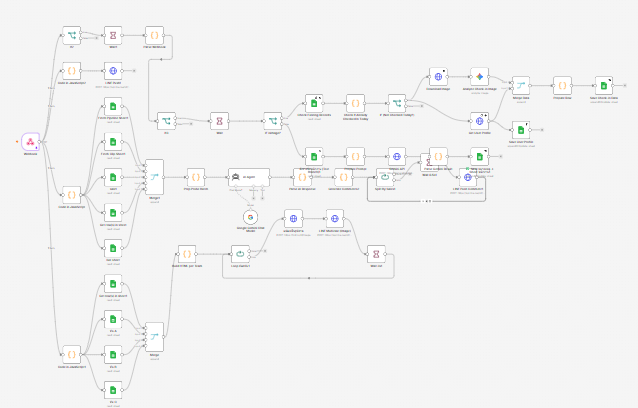
⤢ fullหัวใจหลักของระบบ — Workflow ขนาด 50 nodes รับ Event จาก LINE ผ่าน Webhook ใช้ Gemini AI Agent วิเคราะห์เคสการเงินของลูกค้าและแนะนำสถาบันสินเชื่อ ทำงานร่วมกับ Google Sheets (14 จุด) และเรนเดอร์รูปสรุปผ่าน hcti.io ส่งกลับเข้า LINE The core system — a 50-node workflow receiving LINE events via webhook, using a Gemini AI agent to analyze finance cases and recommend lenders, orchestrating Google Sheets (14 ops) and rendering summary images via hcti.io back to LINE.
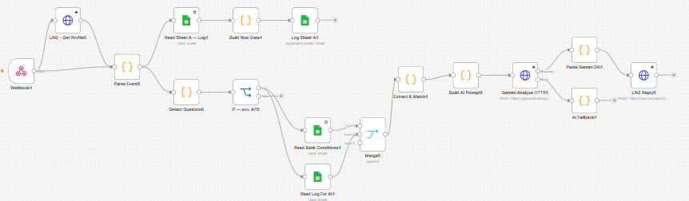
⤢ fullผู้ช่วย AI ที่ซับซ้อนที่สุด — รับข้อความเคสจาก LINE ใช้ Regex สกัดโปรไฟล์ลูกค้า (อาชีพ/รายได้/อายุงาน/ประวัติ NCB/ราคารถ/DTI) จับคู่เงื่อนไขธนาคารจาก Google Sheet คำนวณตารางค่างวด 6 ธนาคาร (KKP/TTB/KBANK/TISCO/AY) แล้วให้ Gemini 2.5 Flash สวมบท "Senior Coach" ด้วย Few-shot 9 ตัวอย่างจริง ประเมิน % โอกาสจบ + สั่งการเป็นสเต็ป พร้อม auto-log ประวัติเคส The most sophisticated assistant — receives case messages on LINE, uses regex to extract customer profiles (occupation, income, tenure, NCB history, car price, DTI), matches them to bank rules in Google Sheets, computes installment tables for 6 banks (KKP/TTB/KBANK/TISCO/AY), then has Gemini 2.5 Flash act as a "Senior Coach" via 9 real few-shot examples — scoring win-probability with step-by-step orders, plus automatic case-history logging.
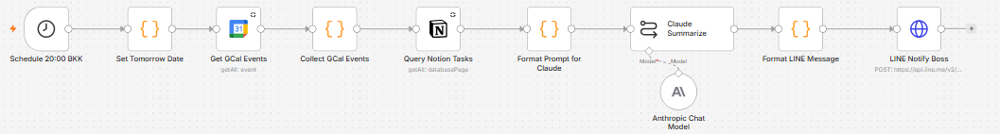
⤢ fullAI Agent ตั้งเวลา 20:00 ทุกวัน — ดึงนัดหมายจาก Google Calendar และงานค้างจาก Notion มาสรุปด้วย Claude (Anthropic) เป็นบรีฟตอนเย็น ส่งเข้า LINE ให้ผู้บริหารเห็นภาพรวมโดยไม่ต้องรวบรวมเอง A scheduled AI agent running daily at 20:00 — pulls events from Google Calendar and open tasks from Notion, summarizes them with Claude (Anthropic) into an evening brief pushed to LINE for management.
บอทขาย LINE ที่ตอบด้วย Reply API (replyToken) แทน Push — ตอบในหน้าต่าง reply ไม่กิน push quota · รวมข้อความที่ลูกค้าพิมพ์รัว ๆ ด้วย บัฟเฟอร์ 5 วินาที (MongoDB + Wait) แล้ว de-dup ตาม messageId · แกนหลักเป็น Hybrid Rule Engine (v8) 100% rule-based ไม่เรียก AI (ประหยัดค่า token) — จับรุ่นรถ 30+ รุ่น, priority rules, topic-switch guard, ไล่เก็บ lead (ดาวน์ → อาชีพ → ประวัติเครดิต → ขอเบอร์/ไลน์) · จำ state ราย user ใน MongoDB (askedQuestions/collectedInfo ข้าม turn) + คำสั่งแอดมินล้างหน่วยความจำ · มี image pipeline รับรูป เทิร์นรถ/QR → อัปโหลด Google Drive → ตอบ Flex carousel การ์ดรถจาก Google Sheets A LINE sales bot that answers with the Reply API (replyToken) instead of Push — replying inside the reply window with no push-quota cost · merges rapid-fire customer messages via a 5-second buffer (MongoDB + Wait) and de-dupes by messageId · its core is a 100% rule-based Hybrid Rule Engine (v8), no AI calls (token-cost free) — detecting 30+ car models, priority rules, a topic-switch guard, and a full lead-capture flow (down payment → occupation → credit history → ask phone/LINE) · per-user state kept in MongoDB (askedQuestions/collectedInfo across turns) with admin clear-memory commands · plus an image pipeline for trade-in/QR photos → Google Drive upload → Flex-carousel car cards from Google Sheets.
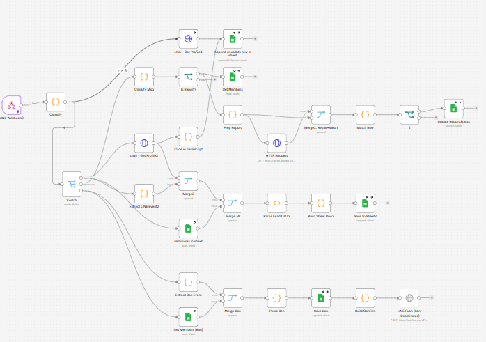
⤢ fullWorkflow 30 nodes รับข้อความผ่าน Webhook แล้วใช้ Switch/IF แยกประเภทหลีด บันทึกเข้า Google Sheets (7 จุด) ผ่าน LINE Messaging API + Apps Script สร้างฐานข้อมูลหลีดส่วนกลางแบบ Real-time A 30-node workflow receiving messages via webhook, routing lead types with Switch/IF and logging into Google Sheets (7 ops) via the LINE Messaging API + Apps Script — a centralized real-time lead database.
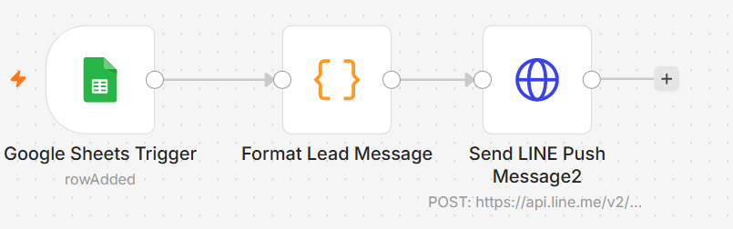
⤢ fullเฝ้าดูชีต "Lead Tiktok" ด้วย Google Sheets Trigger ทุกนาที เมื่อมีหลีดใหม่จาก TikTok Ads เข้ามา จะจัดรูปแบบเป็นการ์ดข้อมูลลูกค้า (ชื่อ/เบอร์/รุ่นรถ/เวลาสะดวก/Ads) แล้ว push เข้า LINE ให้ทีมเซลล์ทันที — ต่อกับ Cloudflare Workers redirect ที่ติดตามแหล่งหลีด Watches a "Lead Tiktok" sheet every minute via a Google Sheets Trigger; on each new TikTok-ad lead it formats a customer card (name/phone/car model/preferred time/Ads) and pushes it to LINE for the sales team — paired with a Cloudflare Workers redirect that tracks lead sources.
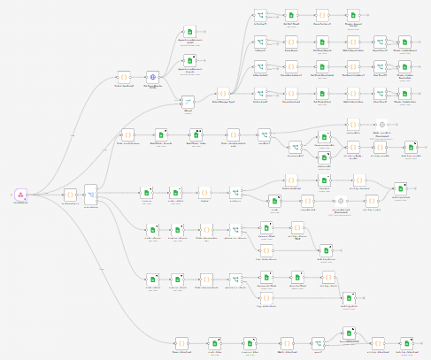
⤢ fullระบบที่ใหญ่และซับซ้อนที่สุด — 81 nodes (Google Sheets 33, Logic/IF 13) จับข้อมูลลูกค้าและหลีดจากช่วงไลฟ์สดแบบเรียลไทม์ ผ่าน Webhook แล้วแยกเส้นทางป้อนเข้าฐานข้อมูลหลีดส่วนกลางอัตโนมัติ The largest, most complex workflow — 81 nodes (33 Google Sheets ops, 13 IF branches) capturing live-stream customer & lead data in real time via webhook, routing it into the central lead database.
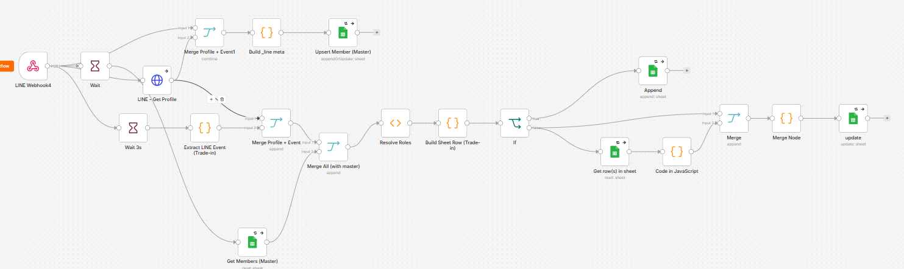
⤢ fullบอต LINE 20 nodes รับข้อความเคสรับซื้อ/เทิร์นรถ — แยกบทบาทผู้ส่ง/จัดซื้อจากชื่อ LINE, จับคู่รุ่นรถอัตโนมัติจาก dropdown 60+ รุ่น ด้วย Regex, จัดประเภทเคส (HOT/VERY HOT/COOL/REJECT) แล้ว append/update เข้า Google Sheets พร้อมรวมคอมเมนต์จัดซื้อ A 20-node LINE bot parsing car buy/trade-in cases — resolves sender/buyer roles from LINE names, auto-matches car models against a 60+ model dropdown via regex, classifies cases (HOT/VERY HOT/COOL/REJECT), and appends/updates Google Sheets while merging purchasing comments.
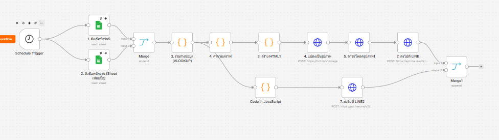
⤢ fullระบบเช็คชื่อพนักงานอัตโนมัติ — รวม 2 ชีต (VLOOKUP) คำนวณ "มาสาย" (grace 5 นาที) สร้างเป็นตาราง HTML แล้วแปลงเป็นรูปด้วย hcti.io ส่งเข้า LINE group ทุกเช้า พร้อมแท็กคนที่ยังไม่เช็คชื่อ An automated attendance system — merges two sheets (VLOOKUP), computes lateness (5-min grace), builds an HTML table rendered to an image via hcti.io, and posts it to a LINE group each morning while tagging anyone not yet checked in.
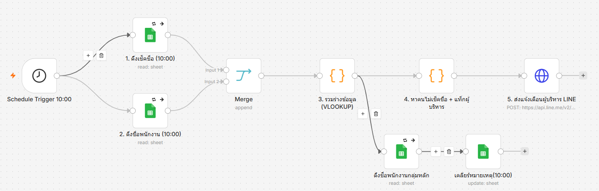
⤢ fullระบบ Escalation อัตโนมัติเวลา 10:00 — รวมข้อมูล 2 ชีตด้วย VLOOKUP หาคนที่ยังไม่เช็คชื่อ แล้วส่ง LINE textV2 @mention แท็กทั้งพนักงานที่ค้างและผู้บริหารโดยตรง ไม่มีเคสตกหล่น An automated 10:00 escalation — VLOOKUP-merges two sheets to find who hasn't checked in, then sends a LINE textV2 @mention tagging both the pending staff and managers directly, so nothing slips through.
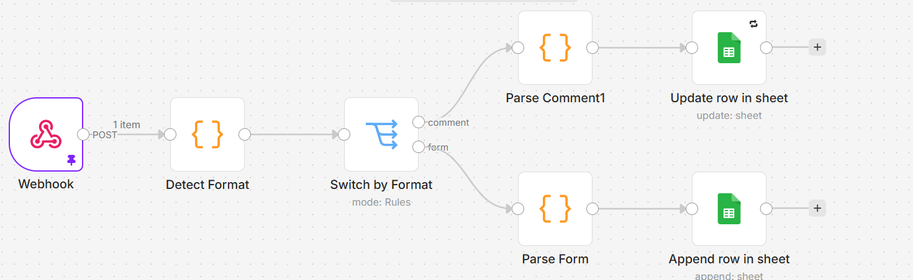
⤢ fullWorkflow รับข้อมูลผู้สมัครงานผ่าน Webhook ใช้ Switch แยกเส้นทางตามประเภท แล้วบันทึกเข้า Google Sheets อัตโนมัติ ช่วยให้ HR คัดกรองและติดตามได้สะดวกขึ้น A recruitment workflow receiving applicant data via webhook, routing by type with Switch and logging into Google Sheets automatically — easing HR screening and follow-up.
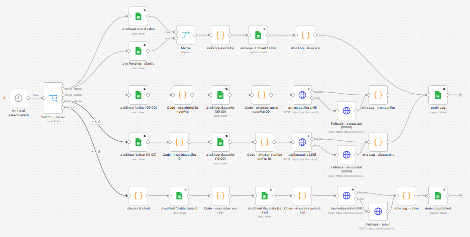
⤢ fullระบบ Follow-up & ยืนยันอัตโนมัติ 32 nodes — ส่งคำถามยืนยันผ่าน LINE แล้วใช้ Switch อ่านคำตอบ จัดการ Logic ด้วย Code (12 จุด) และบันทึกผลการยืนยันลง Google Sheets (11 จุด) An automated follow-up & confirmation flow — 32 nodes sending confirmation prompts over LINE, parsing replies with Switch, handling logic in Code (12 nodes) and recording outcomes to Google Sheets (11 ops).
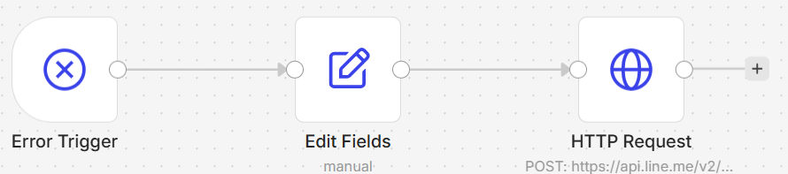
⤢ fullตัวจัดการข้อผิดพลาดส่วนกลาง ใช้ n8n Error Trigger ดักทุก workflow ที่ล้มเหลว แล้วส่งรายละเอียด (ชื่อ workflow / node ที่พัง / ข้อความ error / ลิงก์ execution) เข้า LINE ทันที ตรวจจับและแก้ได้ก่อนกระทบงานจริง A centralized error handler using n8n's Error Trigger to catch any failing workflow and instantly push the details (workflow name / failing node / error message / execution link) to LINE — catching issues before they impact operations.
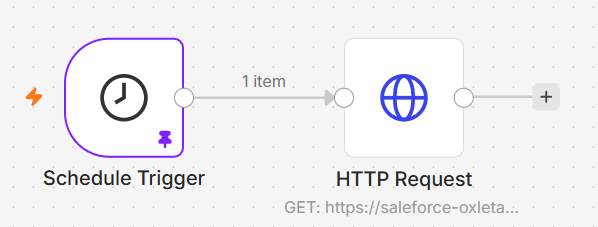
⤢ fullHeartbeat แกนกลางที่เดินทุกนาที ยิง HTTP ไปปลุก Backend บน Vercel (saleforce-oxletauto) เพื่อขับเคลื่อนงานตามเวลา เช่น การนับ SLA และทริกเกอร์ต่าง ๆ ให้ตรงเวลา A core heartbeat ticking every minute, firing an HTTP call to wake a Vercel backend (saleforce-oxletauto) that drives time-based jobs such as SLA countdowns and timed triggers.
ระบบ Data Pipeline อัตโนมัติแบบ 3 จังหวะต่อวัน สำหรับวิเคราะห์ตลาดป้ายทะเบียน/รถมือสอง — 02:00 รัน Python Scraper 2 แหล่ง (OKDee, WebTabien) แล้ว Merge + ทำความสะอาดข้อมูลเก็บเข้า Google Sheets · 03:00 Price Analysis Engine วิเคราะห์ราคา · 06:00 สรุปเป็นรายงานประจำวันส่งเข้า LINE และอีเมลอัตโนมัติ พร้อมระบบ retry/continue-on-fail กันงานล่ม A fully automated 3-stage daily data pipeline for second-hand car / license-plate market analysis — 02:00 runs two Python scrapers (OKDee, WebTabien), merges & cleans the data into Google Sheets · 03:00 a price-analysis engine processes the market data · 06:00 auto-generates a daily report delivered via LINE & email — with retry / continue-on-fail safeguards against failures.
เว็บแอป Django ที่ออกแบบ Data Model, Backend, UI และ Deploy เองทั้งหมด — server-rendered, ระบบสิทธิ์หลายบทบาท, เชื่อม LINE และ Google Sheets End-to-end Django web apps — data model, backend, UI and deployment built solo. Server-rendered, multi-role permissions, integrated with LINE and Google Sheets.
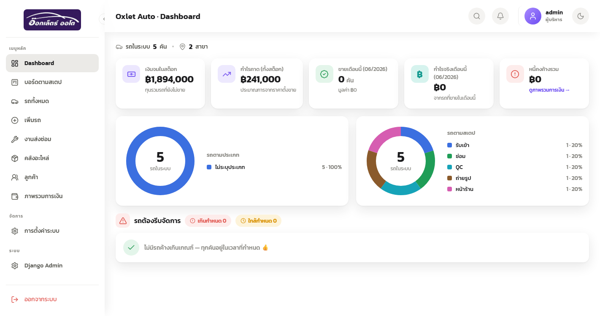
⤢ fullระบบติดตามรถมือสองครบวงจร ตั้งแต่ รถเข้า → ทำสภาพ → ขึ้นโชว์ → ขาย — gen Car Code + QR แปะหน้ารถ คนงานสแกนเปลี่ยนสเตปบนมือถือ (แนบรูป/วิดีโอ) บันทึกต้นทุน/กำไรต่อคัน (P&L), จอง/ลูกค้า, คลังอะไหล่, อู่นอก, Dashboard ผู้บริหาร แยกสาขา + วัด T2L และแจ้งเตือนผ่าน LINE · ระบบสิทธิ์ 6 บทบาท A full second-hand-car tracking system from intake → recon → showroom → sold — auto-generates a Car Code + QR for each car; workers scan to advance stages on mobile (with photo/video), logging per-car cost & profit (P&L), bookings/customers, parts inventory, sublet jobs, a branch-split executive dashboard with T2L metrics, and LINE alerts · 6-role permission system.
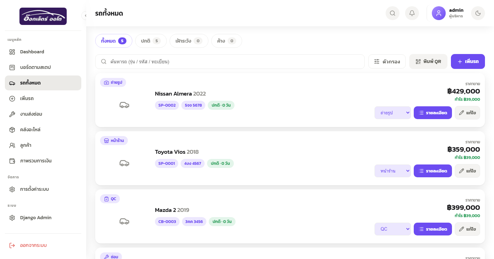
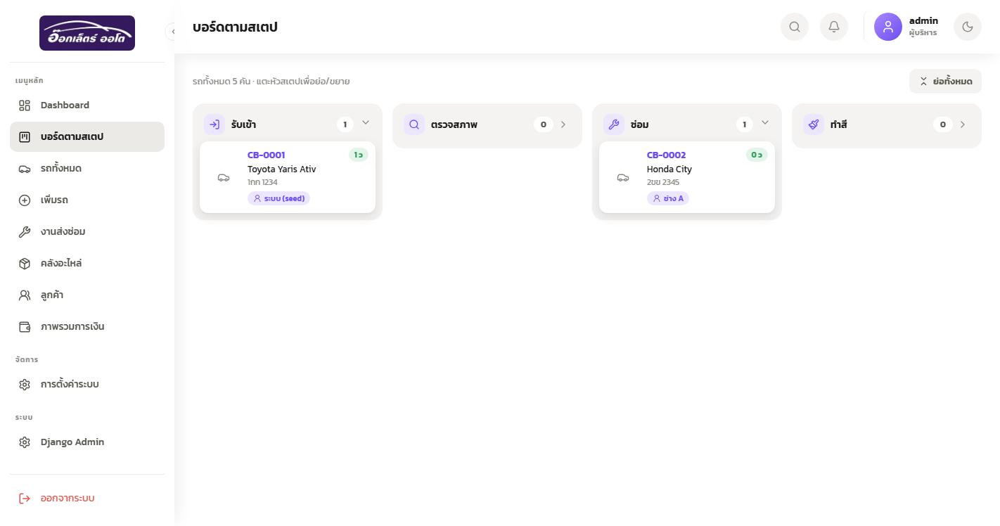
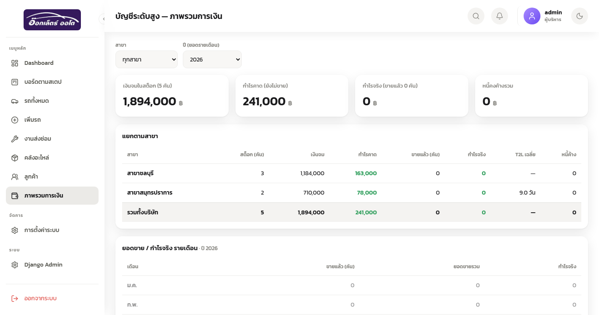
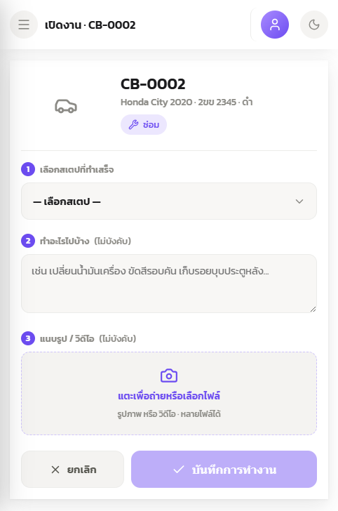
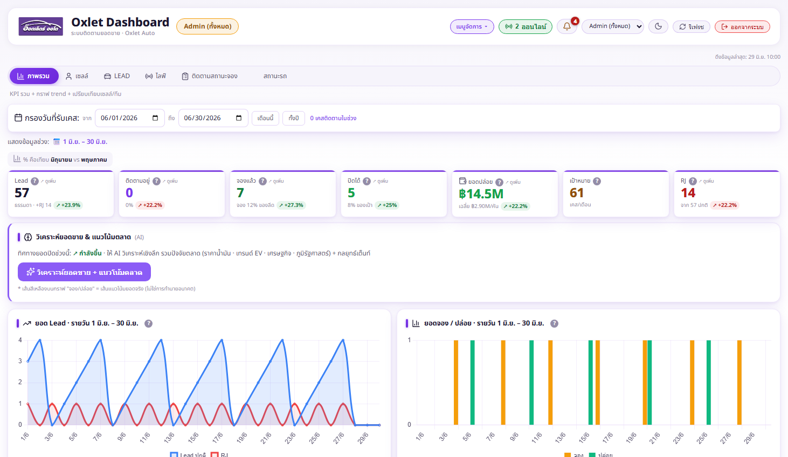
⤢ fullเว็บแอป Django ติดตามยอดขาย / Lead / Live ของทีมเซลล์ — ดึงข้อมูลจาก Google Sheets API แบบ real-time (ไม่มี local DB), Dashboard ผู้บริหารสรุปยอดทั้งทีม + กราฟ Chart.js (Lead / จอง-ปล่อย / Pipeline / Deal Value), หน้าส่วนตัวเซลล์รายคนผ่าน URL token, จัดอันดับรุ่นรถยอดนิยม, ส่ง LINE Flex สรุป pipeline · Deploy บน Vercel + cron ทุก 1 นาทีผ่าน n8n A Django app tracking the sales team's sales / leads / live activity — pulls from the Google Sheets API in real time (no local DB). Executive dashboard with team-wide rollups + Chart.js graphs (leads / bookings-releases / pipeline / deal value), per-seller private pages via URL token, top-car-model ranking, and LINE Flex pipeline summaries · deployed on Vercel with a 1-min cron via n8n.
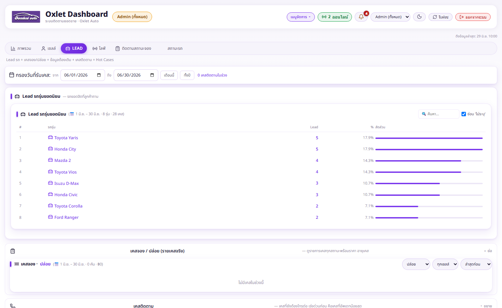
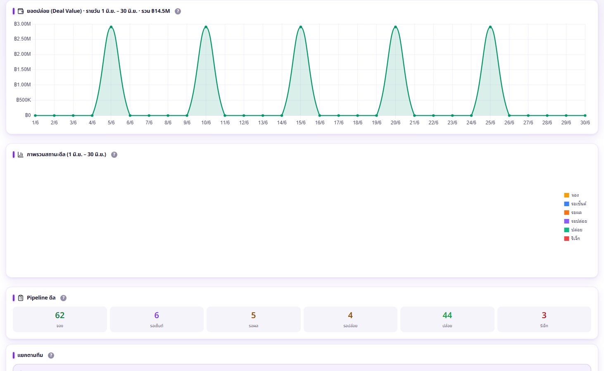
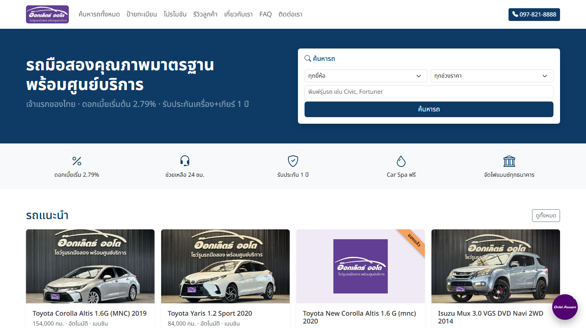
⤢ fullเว็บไซต์ขายรถมือสองสาธารณะ (clone oxletauto.co.th) — ประกาศขายรถ 160+ คัน พร้อมฟิลเตอร์ยี่ห้อ/รุ่น/งบ, หน้ารายละเอียดรถ + แกลเลอรีรูป + คำนวณค่างวด, เปรียบเทียบรถ, ทะเบียนสวย, โปรโมชัน, รีวิว + ดึง Google Reviews, ฟอร์มเก็บ Lead และ AI Chat (Gemini) ตอบลูกค้า · หลังบ้านจัดการรถ + SEO slug · Deploy ด้วย Docker + Caddy A public used-car dealership site (clone of oxletauto.co.th) — 160+ car listings with brand/model/budget filters, detail pages with image galleries + installment calculator, car comparison, premium license plates, promotions, reviews pulling Google Reviews, a lead-capture form and an AI chat (Gemini) assistant · management backend + SEO slugs · deployed with Docker + Caddy.
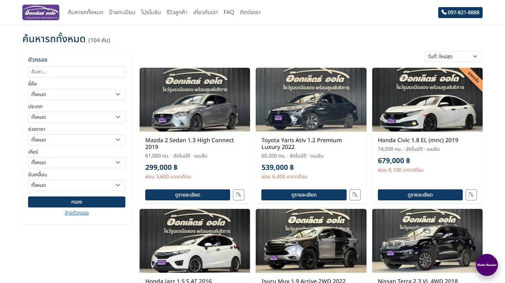
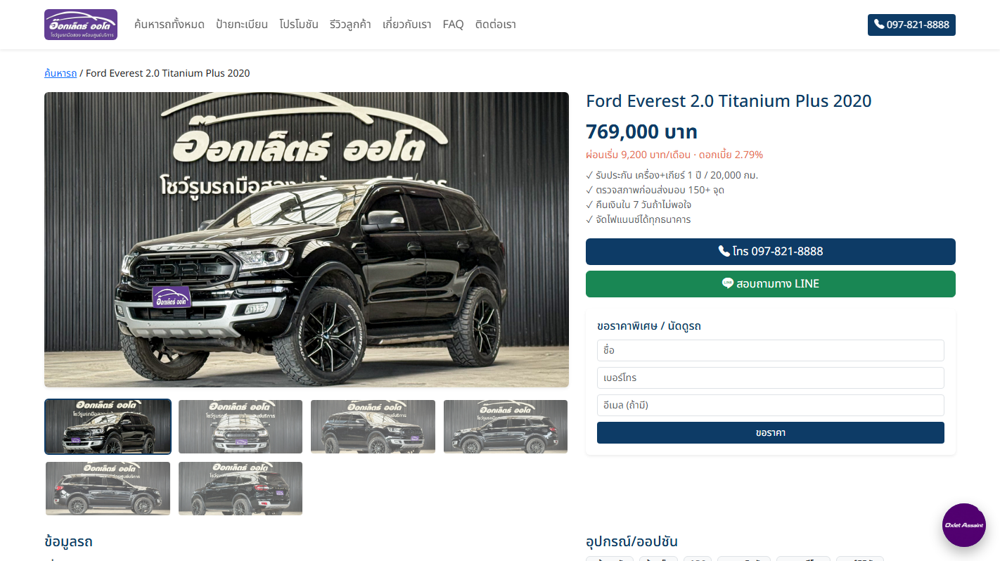
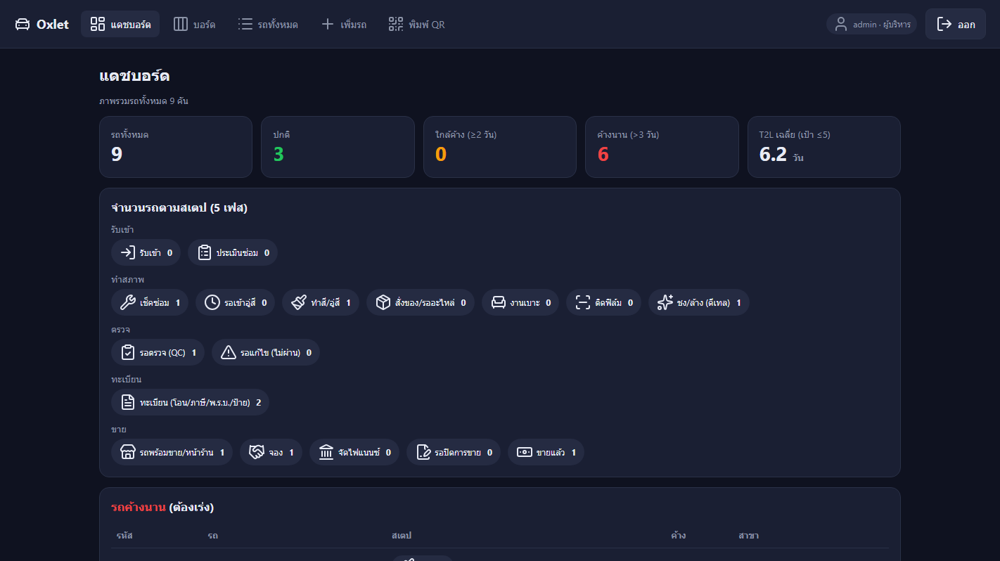
⤢ fullเวอร์ชัน tracking-only ที่รีไฟน์ตาม เวิร์กโฟลว์หน้างานจริง — แตกเป็น 16 สเตป ใน 5 เฟส (รับเข้า · ทำสภาพ · ตรวจ QC · ทะเบียน · ขาย) เพิ่มบทบาท ฝ่ายทะเบียน สำหรับโอน/ภาษี/พ.ร.บ./ป้าย · เปลี่ยนสเตปผ่านสแกน QR เท่านั้น (7 บทบาท) · วัด T2L + ธงรถค้างนาน A tracking-only edition refined to the real shop-floor workflow — broken into 16 steps across 5 phases (intake · recon · QC · registration · sale), adding a dedicated Registration role for transfer/tax/insurance/plates · QR-scan-only stage changes (7 roles) · T2L metric + stuck-car flags.
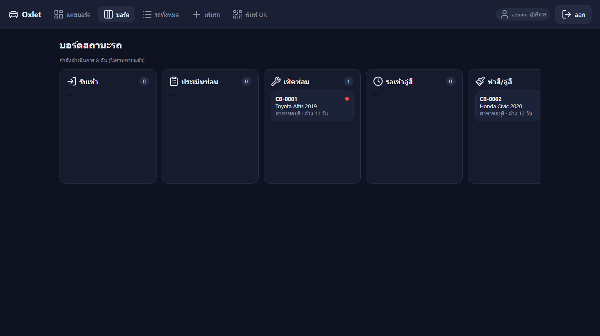
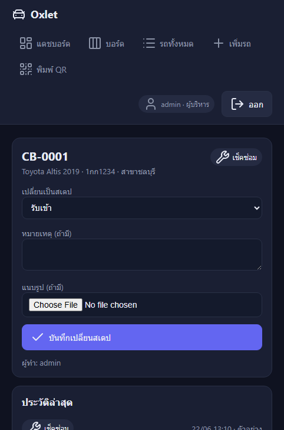
จากงานจริงในองค์กรสู่โปรเจกต์ Full-stack และ Machine Learning From real production work to full-stack and machine-learning projects.
สแต็กที่ใช้สร้างและดูแลระบบจริงในแต่ละวัน The stack I use to build and run real systems every day.